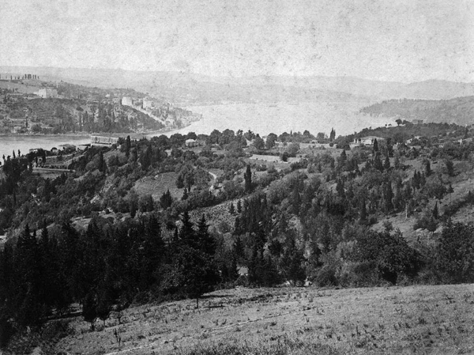
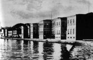

Zannediyorum 1887 tarihlerinde idi; (fakat bu tarihi bilmekle değil, duymakla biliyorum) hıdiv-i sabık İsmail Paşa hanedan, efrad ve erkânıyla beraber beş seneden fazla oturduğu Napoli’den İstanbul’a gelmişti. Çünkü İsmail Paşa hıdivliği oğlu Tevfik Paşa’ya emanet edip Mısır’ı terk ettikten sonra; azametli bir jurnal yüzünden İstanbul’a gelememiş; Napoli’de ikamete mecbur olmuştu.
Ailenin Mısır hanedanına nispeti eskidir. Büyükbabamın Mısır kapı kethüdalığından ve belki daha evvelinden başlar. Büyük validem de babamı beraber alarak birkaç defa Mısır’a gidip kadın efendilere misafir olduğu için münasebet büsbütün genişledi ve bundan dolayıdır ki Sultan II. Abdülhamid Hıdiv İsmail Paşa’nın haremleri kadın efendilere verilmek üzere ihdas olunan şefkat nişanlarını Mısır’a götürmek vazifesini o zaman Adliye mektupçusu olan öz amcam Ali Rıza Bey’e (Paşa) ihale etmiştir.
Bu muhtasar malumattan anlaşılacağı üzere Mısır hanedanına nispetimizin eskiliği ve samimiliği şüphe götürmez ve binaenaleyh bu yazılarla dahi sevimli ve lütufkâr karilerime vereceğim haberler hüve hüvesine doğrudur.

XIX. yüzyıl sonu, Boğaz’dan bir görünüm
Büyük anam ancak 1890-91 tarihlerinde beni Emirgân’a götürmeye başladı. Yaşıma ve boyuma bosuma göre bir redingotum, başımda da kırmızı bir fesim vardı. Redingotum daima ilikli durur, boyunbağlarım koyu renkten olur; ayaklarımda siyah düğmeli potinler bulunurdu. Odalara girip çıkmak, selam vermek, sorarlarsa kısa cevap vermek, katiyen lakırdıya karışmamak, bahusus[77] ne derlerse derhal yapmak gibi mümareseleri evimizde öğrendikten, öğrendiğimize emniyet getirdikten sonra da bu gibi yerlere götürüldüğümüz için büyük anam ne zaman Emirgân’a gitse ben de beraberinde giderdim. Fakat bu gibi ziyaretlerin bir de teşrifatı vardı. Kadınlar ferace giyerlerdi. Yaşmak takınırlardı. Kayıkların işlemeli örtüleri kayığın arkasına serilir ve uçlarındaki sırmalı topuzlar denize doğru sarkardı. Kayıkçıların hilalî gömlekleri, çuhadan yarım pantolonları, bembeyaz fanila çorapları, terledikleri zaman giymeleri için yine sırmalı ve kısa kollu ceketleri vardı. Bazı vakitlerde bir harem ağasının kayığın arkasına serili örtünün üzerinde oturduğu vaki olduğu gibi, kayığında oturan sahibinin yanında bir arkadaşı veya ailesinden birisi yoksa karşısında bir kalfası bulunurdu.
İşte böyle ve iki çifte bir kayıkla Bebek’teki yalımızdan Emirgân’daki saraya giderdik. O zamanlarda bir de kayık teşrifatı vardı ve buna çok dikkat olunurdu. Piyade denilen tek kürekli kayık veya sandallara ûlâ[78] sınıf-ı sânisi[79] ricali binerlerdi. İkişer çifteye hakları yoktu veya beygirli arabalara binmek için mutlaka asgarî ûlâ sınıf-ı evvel[80] rütbelerine sahip olmak icap ederdi.
Hâlâ hatırımdadır. Emirgân rıhtımına yanaştığımız vakit biz rıhtımda sarayın haremağaları karşılarlar; harem kapısına kadar beraber yürürler; kapılar açılınca bizi diğer ağalara teslim ederler; onlarda karşımıza çıkan nöbetçi kalfalara kadar yanımızdan ayrılmazlardı.

Hidiv Paşa Sarayı, Emirgan
İlk işimiz misafir kabulüne mahsus olan aynalı odada kadınların soyunmalarını ve kendilerine çeki düzen vermelerini beklemekle geçerdi. Bundan sonra misafirlerin istirahatına mahsus odalara geçerdik. Kahve veya şurup veya dondurma getirirlerdi. Yarım saat sürmeyen bu hareketlerden sonra kadın efendilerin dairesine çıkarılırdık. Fakat bu da hatırımdadır, büyük valideme mahsus bir imtiyaz olarak biz birinci misafir odasından alınarak doğruca kadın efendilere çıkardık. Üçüncü kadın Çeşmiafet Hanımefendi büyük valideme fazla ve çok samimi bir alaka ile iltifat ettiği için bizim Emirgân Sarayı’nda yerimiz müşarünileyhanın[81] dairesi olurdu. Geceleri kaldığımız vakit bu dairedeki odamızda kalırdık. Ancak ziyaretimiz günübirlik olsun olmasın, baş kadın efendiyi görmek de bir vazifemiz olurdu ve hiç değişmezdi.
Hele kaldığımız gecelerin gündüzleri beni kapı kapı dolaştırırlardı. Hıdiv İsmail Paşa’nın oğulları Hüseyin, Hasan, İbrahim, Fuat ve Mahmud Paşalar pederleriyle beraber Emirgân Sarayı’nın sağında ve solundaki yalılarda ikamet ettikleri için benim günlerim bu daireleri gezmek ve genç prens ve prenseslerle bahçede, parkta, havuzlarda koşmakla geçerdi. Hatta bir gece yukarıdaki köşkün havuzuna düştüğümü ve Fuad Paşa’nın eline yapışarak yukarı çekildiğimi hâlâ hatırlıyorum. Bu Fuad Paşa Mısır kralı merhum I. Fuad’dır.
Büyük validemin bir merakı da bana şiirler okutmak, Türkçe ve Fransızca monologlar söyletmek olduğu için bu hünerlerimi arada sırada İsmail Paşa’ya arz ederdim. Mahut redingotlu kıyafetimle beni başağa elimden tutar; büyük sofalardan, koridorlardan geçirerek üst kattaki daireye çıkarırdı. İsmail Paşa çok mültefit, neşeli, sevimli ve pek de erkek güzeli bir zat olduğu için huzurunda hiç sıkılmazdım. Yalnız ilk defa olarak yanına götürüldüğüm zaman biraz afallamıştım. Zira her zaman ve her yerde duyduğum ve bana öğrettikleri sözlerden başka cümleler duyduğum için çocukluk bu ya, şaşırmıştım. Çünkü İsmail Paşa merhum, lakırdı arasında medar-ı kelam olarak “falan festekiz” dediği için ben ilk defa duyduğum bu cümlenin bir türlü mânâsını anlayamamış, binaenaleyh cevap verememiştim. Mesela “Baban nasıl? İyi mi? Falan festekiz. Gözlerinden öperim” gibi konuşurdu.
Yeni Sabah, 19 Mayıs 1943